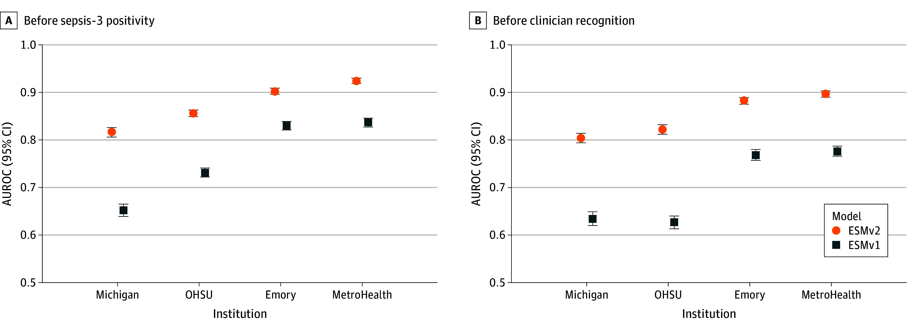

HQRS 846 · Human factors in health care
Any of us.Given the circumstances.
Original photograph · © HSSIB, 2026
Queen's identity test 02
Photography carries the story. Queen's Blue holds the room; Red marks causality; Gold marks the moment to notice.
HQRS 846 · Human factors in health care

LOOK